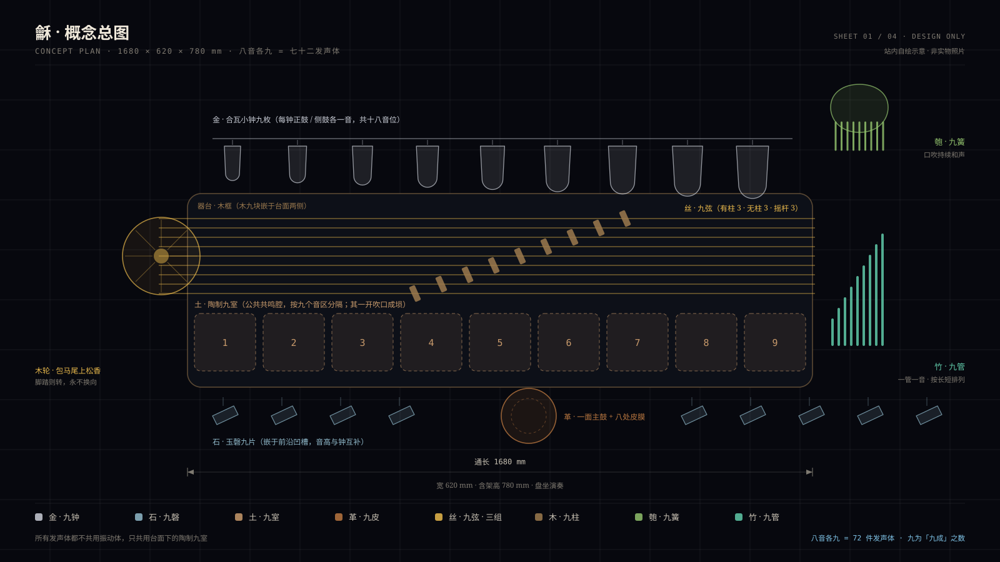
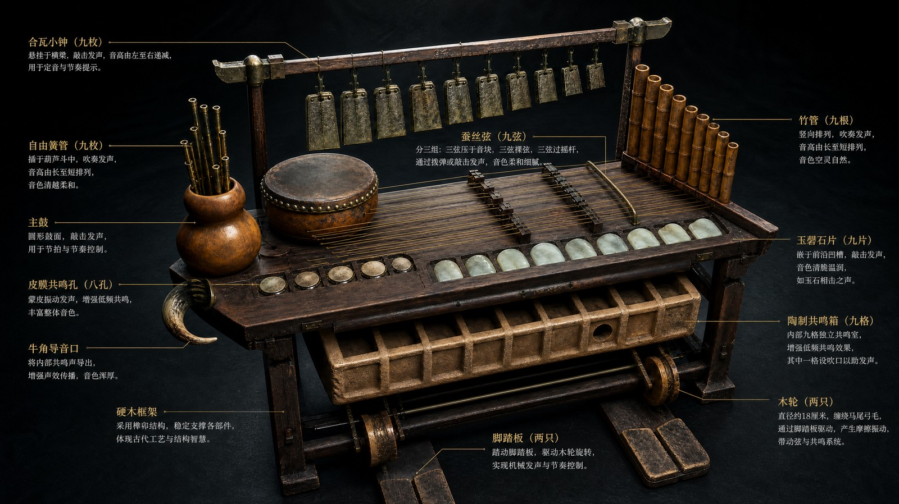
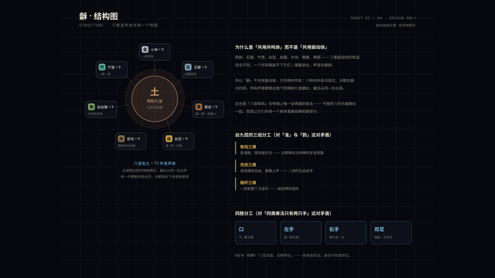
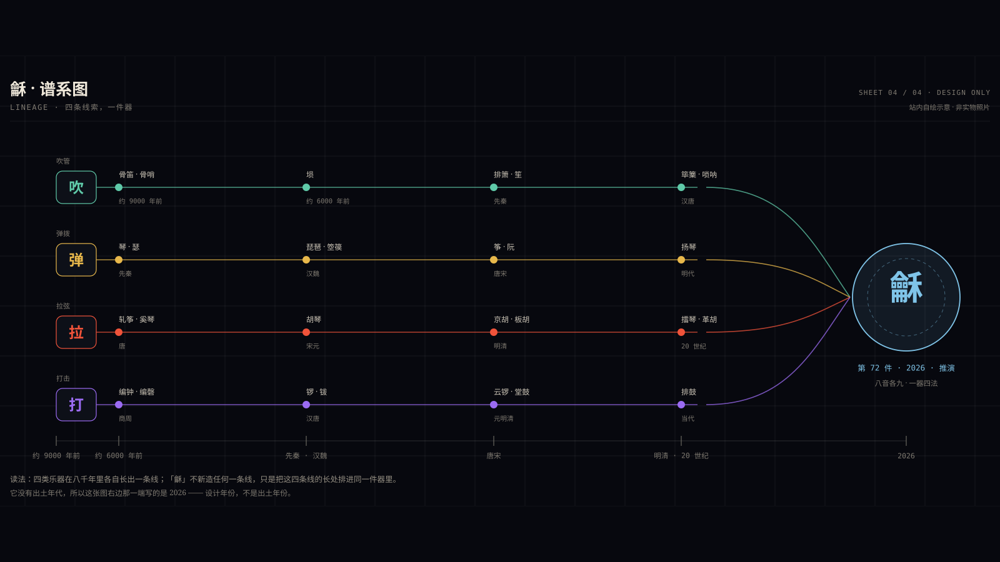
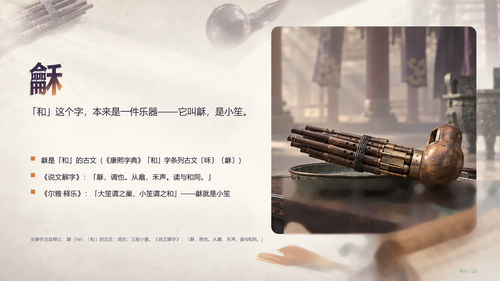

IMG
IMG
先说清楚 · 这不是文物
本页所有文字都是设计说明，不是史料。全站 71 件乐器有出土实物、有文献、有传承人；第 72 件什么都没有 —— 它是一份图纸，一次推演，一个「如果把这些长处排好次序会怎样」的答案。 我们把它写进这个网站，不是要让它冒充古董，而是因为：把 71 件东西的长处真正想清楚，本身就是理解它们最好的方式。
顺带一说 · 古籍里真有一个「龢」
它当然不是第 72 件。「龢」在文献里是一件真实存在过的乐器 —— 小笙：《爾雅·釋樂》说「大笙謂之巢，小笙謂之和」，注里更写明「和，十三簧」； 《說文解字》释「龢，調也。从龠，禾聲」，而《康熙字典》「和」字条把〔龢〕列为古文 —— 「和」这个字本身，就是从这件乐器来的。《周禮·春官·笙師》掌教吹竽笙，《詩經·小雅·鹿鳴》说「吹笙鼓簧」，都是它出场的地方。
本站的第 72 件沿用了这个名字，但它是一件推演出来的器，与那件十三簧的小笙并不是同一件东西 —— 同名，不同物，这一点必须说在前面。
01 · 起点
先把 71 件乐器的长处数一遍
不排年表，不比音域，只问一件事：这件乐器最擅长什么？答案归到最后是十二条 —— 再加一条就会和前面重复，少一条就有乐器的本事没处安放。
02 · 打架
十二条长处里，有一半互相拆台
这才是「集所有优点」最难的地方。优点不是堆起来就行：弹拨的颗粒留不住，吹拉的线咬不住字；四类奏法都要手，人只有两只。所谓集优点，其实是给每一对矛盾找一处物理上的分工。
03 · 命题
于是写下八条命题
每一条都配一句「怎么算成立」。不能检验的说法，写进设计里只会变成漂亮话。
04 · 设计
一件器，八音各九
外观看像一张矮而长的小几：盘坐其后，口中吹簧与管，左手按弦，右手弹与击，双足踏轮。八种材料各出九件发声体，全部朝台面下的陶制九室耦合 —— 这是「八音和鸣」在物理上唯一说得通的做法。

IMG
IMG
IMG
ANIM04b · 四肢分工
一个人，四路同时开工
这是整件设计里最关键的一处分配：口管持续的和声，脚管永不换向的弓，左手管韵与律，右手管咬字。少了这一条，「集四类于一身」就只是把乐器堆在一起。
形制 · FORM
通长 1680mm
器台通长 1680mm、宽 620mm、含架高 780mm，盘坐演奏。九弦分三组（有柱 / 无柱 / 摇杆），弦长 1100–1300mm； 陶制九室总容积约 24 升，按九个音区分隔。木轮直径 180mm，包马尾、上松香，踏板传动比 1:1.6。
律制 · TUNING
十二律吕为骨，五声为用
金九钟按十二律吕铸定（九钟十八音位），石九磬补其缺音；丝九弦定音以钟磬为准，木柱可移，故能旋宫转调。 实际演奏以五声为骨架，七声与变音由按弦取用 —— 与今天民族乐队的做法一致。
音域 · RANGE
五个八度
低端靠革胡式的大陶室与低音擦弦，高端靠柳琴式的短弦与碰铃、小锣。整体跨度按曾侯乙编钟的五个八度设定 —— 那一套两千四百年前的钟，已经把中国人对音域的胃口写清楚了。
05 · 逐条对照
71 件乐器，各自贡献了一条
这张表是整份设计的底稿，一共 71 行：左边是乐器与它最擅长的一件事，右边是这件事落在「龢」的哪一处。 点乐器名可以直接进它的详情页 —— 想反驳这份设计，最好的办法是先去看看原件。
| 类 | 乐器 | 最擅长的一件事 | 在「龢」上的落点 |
|---|
06 · 试听
听一段合成音
这件乐器没有录音 —— 因为没有人演奏过。所以这里放的是现场合成：用浏览器把四种发声法各写一遍，让它们同时响。它不是「龢」的声音，只是「龢」的思路能不能听。
这是一段现场合成的试听，不是乐器录音 —— 因为这件乐器还不存在。
五行声部同时在场，是本页八条命题里的第一条。合成用的是 Web Audio： 拨弦走 Karplus-Strong 物理建模，簧与擦弦走滤波锯齿加颤音，钟磬是五个非谐分音各自衰减。零音频文件，离线也能响。
07 · 从纸面到能响
真要造它，五步走得通
顺序很重要：先把声音做出来，再验证人的身体扛不扛得住，最后才动木料与青铜。前两步不用花什么钱，却能挡掉大部分白干。
07b · 它还没有的东西
把话说到底：它还不存在
一件还不存在的乐器，最大的风险不是被质疑，而是被写得像真的。所以下面这些，一条都不能省。
08 · 图纸
现在有的，和还没有的
四张图都是站内自绘：三张示意图加一张动画，够把结构讲清楚。演奏音频这一格会一直空着，直到真有人把它造出来、坐下来弹一段。

ANIM
IMG暂无演奏音频 · 未找到
「龢」目前不存在于世上，自然也没有人演奏过它 —— 这一格会一直空着，直到真有人把它造出来、坐下来弹一段。
本站的收录口径：只放公共领域（PD）或知识共享（CC0 / CC BY / CC BY-SA）的录音，
并且逐条注明曲名、演奏者、作者、专辑、收录人、日期、时长、许可与原始链接；来路不明或授权不清的一律不放。
等它真的被奏响，把录音存成 assets/audio/龢-演奏.mp3 并在 assets/manifest.js 里补上来源信息，这里就会变成播放器；
在此之前也可以用 MIDI 把四种发声法编成一段示意曲，放进来时同样标明「合成示意，非真人演奏」。
八音克谐，无相夺伦，神人以和。—— 《尚书 · 舜典》